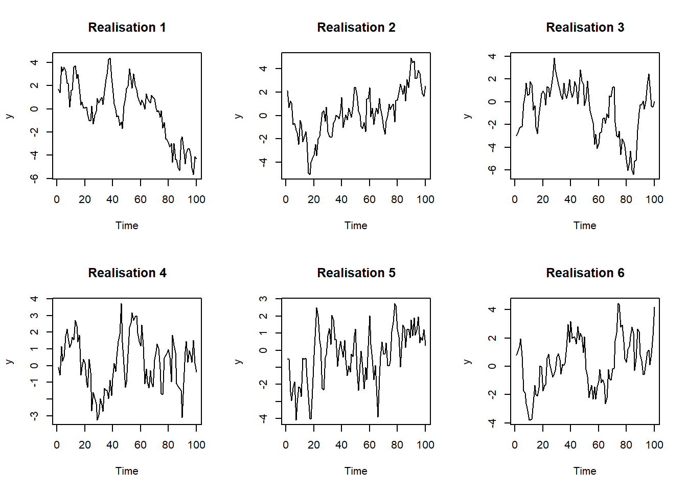

Code
set.seed(1)
par(mfrow = c(2, 3))
for (i in 1:6) plot(arima.sim(list(ar = 0.9), n = 100), main = paste("Realisation", i), ylab = "y")
Date: 27 July 2026
Topic covered: Foundations
What I Did:
Plotted time series plots for discrete and continuous time series data: Section 1
What I Learned:
A time series is an ordered sequence of observations collected over time. The ordering matters since observations are often dependent on previous observations (sequential correlation).
Equally spaced measurements.
Autocorrelation across time.
A time series is a single measurement taken at multiple points through time to give a series of measurements through time.
Noise (stochastic) in data introduces different realisations. An observed time series is only one realisation of an underlying stochastic process. This is important as we are not just trying to model the observations but the process that generated them.
Questions:
Q: How does noise introduce different realisations?
A: In normal regression the pattern is fixed and the noise sits on top of it
\[ y_i = \beta_0 + \beta_1 x_i + e_i, \] where each error term is independent.
In an AR process the noise actually builds the pattern. This means that every apparent trend is made of past shocks that haven’t died away yet. A different set of shocks will give a different shape because the shape of the path comes from noise. It isn’t that time series errors are correlated but that each observation is a weighted sum of every past shock making observations correlated.
set.seed(1)
par(mfrow = c(2, 3))
for (i in 1:6) plot(arima.sim(list(ar = 0.9), n = 100), main = paste("Realisation", i), ylab = "y")
What to Do Next:
The Forecasting Problem
Links: AI Log
Date: 3 August 2026
Topic covered: The Forecasting Problem
What I Did:
Looked at stationary AR processes: Section 1
What I Learned:
A forecast horizon is how far into the future you try to predict values. When looking at time series data we are looking for stable, informative patterns (not just a lot of data).
A forecast is a prediction about what will happen in the future based on evidence that we have (with some uncertainty). Goal setting is what we want to happen in the future and planning is how we reach our goal.
The uncertainty associated with forecasting gives rise to forecast intervals (not just point estimates).
A random walk is a process where memory is permanent. Every future shock accumulates endlessly resulting in forecast variance growing linearly. A stationary AR is a process where memory decays geometrically. Shocks die out, forcing the forecast back to the process mean.
Questions:
Q: If a process changes over time, at what point can we discard previous observations when forecasting?
A: This is decided by the model and is called the model’s memory. A mean benchmark will use every observation and just forecast the mean, the naive benchmark will use the most recent observation, exponential smoothing uses all observations but weights them differently (older observations are given less weight). You would also discard observations if a structural break occurs.
When determining the number of observations to estimate the model (training set) more is usually better, unless the process has changed.
What to Do Next:
Exploring a Series
Links: AI Log
Date: 17 August 2026
Topics covered: Exploring a Series, Benchmarks and Forecast Accuracy
What I Did:
Worked through Time Series Analysis in R using the AirPassengers dataset: Section 1
What I Learned:
Time domain looks at previous observations whereas the frequency domain looks at previous cycles. Often you will need to look at both of these domains.
A trend is the long-run direction of movement in a time series. Seasonality models a pattern that repeats itself at a fixed AND known interval. A cycle is a long oscillation where the length is NOT fixed.
When dealing with time series data you may encounter changing variability. Here you need to transform the data to stabilise variance and difference to remove trend anf seasonality. When structural breaks are present in the data you can either use an indicator variable at the break or you can fit separate models on either side of the break.
There are 4 benchmark forecasting models: Mean, Naive, Seasonal naive and Drift.
Residuals are for diagnostics; forecast errors are for evaluation!
You cannot run normal cross-validation on time series data since the ordering of observations matters. Future observations must never be used when estimating a forecasting model.
Questions:
Q: How do you identify a significant structural break?
A: This can be done using formal tests, dependent on whether the date of the break is known prior to looking at the data. If the date is known in advance, if there was a policy change, you can use Chow’s test. Chow’s test fits the model before and after the date of the break and uses an F-test to check if there is a statistically significant difference in model parameters. If the date is unknown you can run a Chow test at every possible date and take the largest F, compared against adjusted critical values. This is a sup-F test and accounts for having searched over every date, making it harder to declare a break.
What to Do Next:
Operators, Stationarity and White Noise
Links: AI Log
Date: 19 August 2026
Topic covered: Three Validation Strategies, Linear Models for the Conditional Mean
What I Did:
Continued working through Time Series Analysis in R using the AirPassengers dataset: Section 1
What I Learned:
Since you can’t perform regular cross-validation on time series data you use a different approach. Walk-forward validation advances the forecast origin one step at a time and re-estimates the model at each step. Expanding window validation keeps every historical observation while moving the forecast origin forward. Sliding window validation keeps the training window length fixed while moving the forecast origin forward.
Expanding window is good for stable processes whereas sliding window is good for rapidly changing processes.
We want our data to be stationary and for the residuals to be white noise. To restore stationarity you can transform the data to remove the variance of seasonality. You can take the linear/seasonal differences. Log-transformations reduce a multiplicative model to an additive model.
Weak white noise requires uncorrelated observations but strict white noise requires iid observations.
Questions:
Q: What is the difference between walk-forward and expanding window?
A:
What to Do Next:
Conditional Variance Models
Links: AI Log
Date: 24 August 2026
Topic covered: Linear Models for the Conditional Mean
What I Did:
Fit both ARIMA and SARIMA to the AirPassengers dataset:Section 1
What I Learned:
The moving average, MA(\(q\)), model is driven by lagged shocks. The dependence is based on errors not actual observations. The model has short memory. An MA(\(q\)) is always stationary is restricted to be invertible.
The autoregressive, AR(\(p\)), model regresses a series on its own path.
ARMA combines both MA and AR models and is fitted by maximum likelihood, not OLS, since the past chocks are never observed.
ACF and PACF graphs are used to determine which ARMA model to fit. An AR(\(p\)) has a PACF that cuts off after lag \(p\). An MA(\(q\)) has an ACF that cuts off after lag \(q\).
The ARIMA(\(p,d,q\)) model allows for differencing and the SARIMA model includes seasonality.
Questions:
Q: How can you determine if there is additional seasonality in a dataset after differencing or if it is just noise? For example in Section 1, there were still spikes at some lags in the PACF after log-transforming and differencing the AirPassengers dataset.
A: You can check if the residuals look like white noise by using a Ljung-Box test. A non-significant test means that there is no remaining proof of autocorrelation (even if there are will a few lags that spike in the ACF/PACF).
What to Do Next:
Conditional Variance Models
Links: AI Log
Date: 31 August 2026
Topic covered: Time Series Analysis Revision
What I Did:
Finished working through Time Series Analysis in R: Section 1
I still need to do this! Aim to have it done by Monday 7 September.
What I Learned:
Sulaiman revised Time Series Analysis in R. We covered reading in a .csv file and converting it to a tsibble(), time series plots, seasonal and subseries plots, lag plots, autocorrelation functions, time series models, stationarity, differencing and unit root tests.
Questions:
No new questions :)
What to Do Next:
Conditional Variance Models, Spectral Analysis
Links: AI Log
Date: 16 September 2026
Topic covered: Conditional Variance Models (ARCH and GARCH)
What I Did:
Worked through the provided Lab: Section 1
What I Learned:
All previous models have simply modelled the conditional mean and assumed constant variance. This fails for financial return data as it understates risk during periods where risk is highest and overstates risk when it is lowest. We now have both a mean (predictable component of the series) and a variance (conditional variance) equation.
A series can be uncorrelated and still highly predictable in magnitude.
The ARCH model specifies conditional variance as a function of past squared innovations. The simplest case being \(\sigma^2_t = \alpha_0 + \alpha_1 \varepsilon_{t-1}^2\).
Large changes tend to follow large changes and small changes tend to follow small changes. Returns are often uncorrelated, hence why the ACF of returns indicates very little, however squared returns can be strongly autocorrelated.
The GARCH model includes the previous variance to the ARCH equation. This makes it equivalent to an ARCH model with infinite memory. a GARCH(1,1) model is usually sufficient in practice.
\[ \sigma_t^2 = \alpha_0 + \alpha_1 \varepsilon_{t-1}^2 + \beta_1 \sigma_{t-1}^2, \] where \(\alpha_1\) measures how strongly volatility reacts to a new shock, \(\beta_1\) measures how long that reaction lasts, \(\alpha_1 + \beta_1\) is the persistence.
Questions:
Q: Why must \(\alpha_1 + \beta_1 < 1\)?
A: When \(\alpha_1 + \beta_1 < 1\) this ensures that the long-run variance is \(\bar{\sigma}^2 = \frac{\alpha_0}{1- \alpha_1 - \beta_1}\) and that the process has a benchmark variance for the volatility to return to. When \(\alpha_1 + \beta_1 = 1\) (IGARCH) the shocks to volatility are permanent. This means that all the weight is on the past and none is on the long-run level. This is the variance equivalent of a random walk.
What to Do Next: Spectral Analysis
Links: AI Log
Date:
Topic covered:
What I Did:
What I Learned:
Questions:
Q:
A:
What to Do Next:
Links: AI Log
Date: 14 September 2026
Topic covered: Exponential Smoothing
What I Did:
Worked through Exponential Smoothing Exercises: Section 2
What I Learned:
Exponential smoothing forecasts are weighted averages of past observations. Weights decrease exponentially the further back in time you go. The smoothing parameter \(\alpha\) adjusts the weight put on past observations. A large \(\alpha\) puts a lot of weight on the most recent observation, similar to the Naive forecast. A small \(\alpha\) averages over a long history, similar to the Mean forecast. This is similar to GARCH but applied to observations instead of squared shocks.
Simple exponential smoothing (SES) only updates a level resulting in flat forecasts. Holt’s method adds a trend equation, that describes the slope, so forecasts follow a straight line. Holt-Winters adds a seasonal equation. Each component gets its own smoothing parameter (\(\alpha\), \(\beta\), \(\gamma\)).
The smoothing parameters and initial states (\(\ell_0\), \(b_0\)) are estimated by minimising the sum of squared one-step-ahead errors. Fitted values are one-step-ahead forecasts, so residuals are always one-step-ahead errors.
To turn the exponential smoothing algorithm into a state-space model we can write it in error-corrected form: \(y_t = \ell_{t-1} + e_t\), \(\ell_t = \ell_{t-1} + \alpha e_t\). This allows us to estimate \(\sigma\) and build prediction intervals.
This is what ets() does.
Standard prediction intervals only capture the random error and ignore the uncertainty in parameter estimates and choice of model.
Questions:
Q: How do we get variances of SES forecasts (\(\sigma^2[1+\alpha^2(h-1)]\)) if the point forecasts are flat?
A: The point forecast stays at \(\ell_T\), but every future error also moves the level by \(\alpha e_t\). These shifts add up, so uncertainty grows linearly with \(h\) even though the mean does not change.
What to Do Next:
Time Series Regression Models
Links: AI Log
Date: 21 September 2026
Topic covered: Time Series Regression Models
What I Did:
Worked through Chapter 2: Time Series Regression Models and the provided slides, rerunning the R code that had been included. Used a Kalman filter to estimate regression coefficients in the US consumption example: Section 2
What I Learned:
Time Series Regression includes explanatory variables in time series models. This allows one to include trend and seasonality covariates in the model instead of just differencing the series to make it stationary.
ARMAX includes lagged values of the response as predictors, \(y_t = \beta x_t + \phi y_{t-1} + \dots\). This means that \(\beta\) can no longer be interpreted as the effect of \(x\) on the mean of \(y\). Regression with ARMA errors keeps the normal regression equation and lets the errors follow an ARMA process, \(y_t = \beta_0 + \beta_1 x_t + \eta_t\). This means that \(\beta_1\) can still be interpreted in the usual way.
Harmonic regression assumes that the seasonal pattern stays the same over time.
When errors are autocorrelated, OLS still gives unbiased estimates but they are no longer efficient. This means that the standard errors, tests and intervals are also wrong.
This can be fixed with generalised least squares by using gls() with corAR1() or corARMA() or with arima(..., xreg = ).
Questions:
Q: When should I add a lagged response instead of modelling the errors as ARMA?
A:
What to Do Next:
State-Space Models
Links: AI Log
Date: 28 September 2026
Topic covered: State-Space Models
What I Did:
Worked through the dlm practical and the State Space and Kalman Filter tutorial: Section 2
What I Learned:
A state-space model has both an observation equation and a state equation.
The observation equation \(y_t = F\theta_t + v_t\) links what we observe to an unobserved state whereas the state equation \(\theta_t = G\theta_{t-1} + w_t\) describes how the state changes over time.
Regression, ARIMA and exponential smoothing models can all be written in state-space form. State-space models don’t need stationarity since trend and seasonality are modelled directly and allowed to change over time.
The Kalman filter is a recursive algorithm that first predicts and then updates. First the state, \(a_t, R_t\), and the next observation, \(f_t, Q_t\), are predicted. Then the state estimate, \(m_t, C_t\), is updated. The updated estimate is a weighted average of the prediction and the new observation where the Kalman gain decides how much weight is assigned to the observation.
The Kalman filter works in a Bayesian way where, \(\text{posterior} \propto \text{prior} \times \text{likelihood}\). The posterior becomes the prior of the next step.
Questions:
Q: How do I decide which variances in \(W\) should be allowed to be non-zero?
A:
What to Do Next:
Kalman Filter
Links: AI Log
Date: 5 October 2026
Topic covered: Kalman Filter
What I Did:
Continued working through the dlm practical and the State Space and Kalman Filter tutorial: Section 2
What I Learned:
The Kalman filter is used to filter and forecast in dynamic linear Gaussian systems. This filter is recursive so we can process new observations as they arrive. The Kalman smoother starts at the end of a series and works backwards. This is better for looking backwards (not prediction).
If we estimate the state at time \(t\) using data up to time \(s\):
Forecasting and filtering are done using the Kalman filter. Smoothing is done using the Kalman smoother.
The likelihood is the product of one-step-ahead predictive densities, \(y_t \mid y_{1:t-1} \sim N(f_t, Q_t)\). The unknown variances, \(V\) and \(W\), can be estimated by maximum likelihood.
Prediction intervals use \(Q_t = FR_tF' + V\). They are prediction intervals (not confidence intervals) because they are for a future observation and include the observation noise, \(V\), as well as the uncertainty about the state.
If there are missing observations present in the data, there is nothing to update with and the Kalman gain will be zero. Consecutive missing observations increase uncertainty.
Questions:
Q: Why does the Kalman filter only work for linear Gaussian state-space models?
A: The Kalman filter does a linear transformation of a Gaussian which gives another Gaussian.
\[ \text{Gaussian prior} \times \text{Gaussian likelihood} \propto \text{Gaussian posterior} \] The Kalman filter only keeps track of the mean and variance. When we have a non-linear or non-Gaussian distribution we either end up with a skewed distribution or a posterior with no closed form.
What to Do Next:
Hidden Markov Models
Links: AI Log